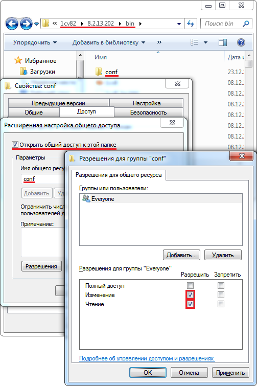
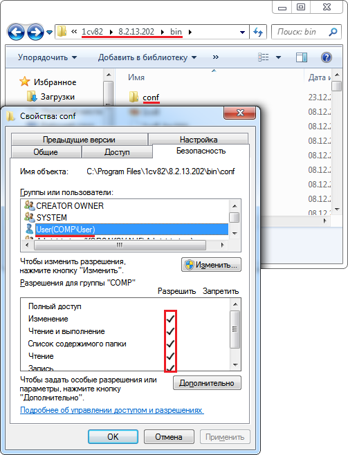

Доступ к сетевому каталогу
Если необходимо предоставить доступ по сети к каталогу компьютера, то необходимо:
-
для каталога создать сетевой ресурс (дать общий доступ);
-
дать необходимые права на сетевой ресурс пользователям или пользователю Everyone;
-
дать необходимые права на каталог пользователям.
Важно понимать, что права доступа к сетевому каталогу состоят из пересечения множества прав на каталог и его сетевой ресурс. Дать права только на каталог или только на сетевой ресурс недостаточно, нужно дать права и на каталог, и на сетевой ресурс, связанный с этим каталогом. Поэтому, полный доступ на сетевой ресурсдля пользователя Everyone
Пример предоставления доступа к каталогу "conf" (C:\Program Files\1cv82\8.2.13.202\bin\conf) на Windows 7:
- для каталога conf создать сетевой ресурс (дать общий доступ):
- открыть свойства каталога "conf" на закладке "Доступ" и нажать кнопку "Расширенная настройка...";
- в открывшемся окне, установить флажок "Открыть общий доступ к этой папке";
- нажать кнопку "Разрешения";
- добавить пользователя "Everyone" и дать ему права на чтение и запись (при использовании файловой системы без разграничения прав доступа (FAT16, FAT32), вместо пользователя "Everyone" добавить того пользователя, для которого назначаются права на каталог).

- дать необходимые права на каталог пользователям:
- открыть свойства каталога "conf" на закладке "Безопасность" и установить необходимые права пользователям;
